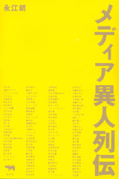
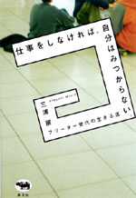
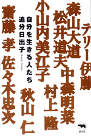
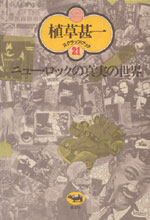
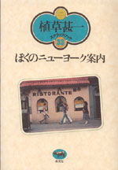

|

|
ノンフィクション・メディア | ||||||
| メディア異人列伝 | |||||||
| 永江朗 | |||||||
| 四六判 412頁 | |||||||
| 定価2200円（本体2310円） | |||||||
| 4-7949-6641-5 C0095 | |||||||
| 2004年４月をもってその歴史を閉じた雑誌「噂の真相」のなかで、11年もの長きに渡って連載された「メディア異人列伝」こそ、「噂の真相」の裏の看板だった。旬のメディアの異才たちに、独自の切り口でインタビューしたこの「メディア異人列伝」11年分を、一挙単行本化。93〜04年までの日本のメディア状況が読み取れる、一大メディア年代記である。 | |||||||
 |
社会・カルチャー |
| 仕事をしなければ、自分はみつからない フリーター世代の生きる道 |
|
| 三浦展 | |
| 四六判 256頁 | |
| 定価1680円（本体1600円） | |
| 4-7949-6655-5 C0036 | |
| “ニート”など仕事をしない20〜30代の若者が社会的問題となっている。これからの時代をいかに生きぬくか、若者のライフスタイルの考察から、その処方せんを探る。街なかでの食べ歩き、路上寝、コンビニ文明、ブランド意識、活字離れなどなど。迷走する若者の姿を目の当たりにした著者は、“仕事をしなければ自分はみつからない”と説く。 |
 |
エッセイ | ||||||
| 自分を生きる人たち | |||||||
| 追分日出子 | |||||||
| 四六判 216頁 | |||||||
| 定価1890円（本体1800円） | |||||||
| 4-7949-6656-3 C0095 | |||||||
| ひとはどうやって自分の道を見つけるのだろうか。テリー伊藤、齋藤孝、岩井俊二、森山大道、村上隆など、現在、第一線で活躍する15人の軌跡を追った物語。彼らは決して順調だったわけではない。むしろ自分のダメな部分にこそ「会いたい自分がいる」と気づき歩んできた。「自分を生きる」ひとたちから読者への温かい声が込められている。 | |||||||
| 映画 | |||||||
| 植草甚一スクラップ・ブック3 第6回配本 ぼくの大好きな俳優たち |
|||||||
| 植草甚一 | |||||||
| 四六判 260頁 | |||||||
| 定価1470円（本体1400円） | |||||||
| 4-7949-2563-8 C0374 | |||||||
| もう何十年も親しんできたジャン・ギャバンも、生まれたばかりみたいなライザ・ミネリも、あの忘れがたいボギーやクーパーたちも__。歩くかれら、しゃべるかれら、かれらがふとしたときに見せる表情は、私たちの生活に深くしみついてしまっている。心揺さぶる名演技者たちの生き方を描く。（解説・和田誠） | |||||||
 |
音楽 | ||||||
| 植草甚一スクラップ・ブック21 第6回配本 ニュー・ロックの真実の世界 |
|||||||
| 植草甚一 | |||||||
| 四六判 256頁 | |||||||
| 定価1470円（本体1400円） | |||||||
| 4-7949- 2581-6 C0373 | |||||||
| 文学に映画に音楽に、つねに新鮮なものとの出会いを期待してやまないわがＪＪ氏が、ニューロックを見逃すはずがない。ジャズとロックの境界線を気軽に越えて、ドアーズやストーンズからフランク・ザッパまで、ロックにおける「フリー」の魅力を語り、ロック革命の真実を衝く。（解説・八木康夫） | |||||||
 |
エッセイ | ||||||
| 植草甚一スクラップ・ブック33 第6回配本 ぼくのニューヨーク案内 |
|||||||
| 植草甚一 | |||||||
| 四六判 232頁 | |||||||
| 定価1470円（本体1400円） | |||||||
| 4-7949- 2593-X C0370 | |||||||
| 実際にアメリカの土を踏む前から、植草さんはグリニッジ・ヴィレッジを自分の庭のように知っていた。オフ・オフ・ブロードウェイの芝居見物から、散歩がてらのショッピング、最高に楽しい古本屋めぐりまで、生粋のニューヨーカーにも劣らぬ旺盛な好奇心と該博な知識で語りかけるこの不思議な都会の魅力。（解説・浅井慎平） | |||||||